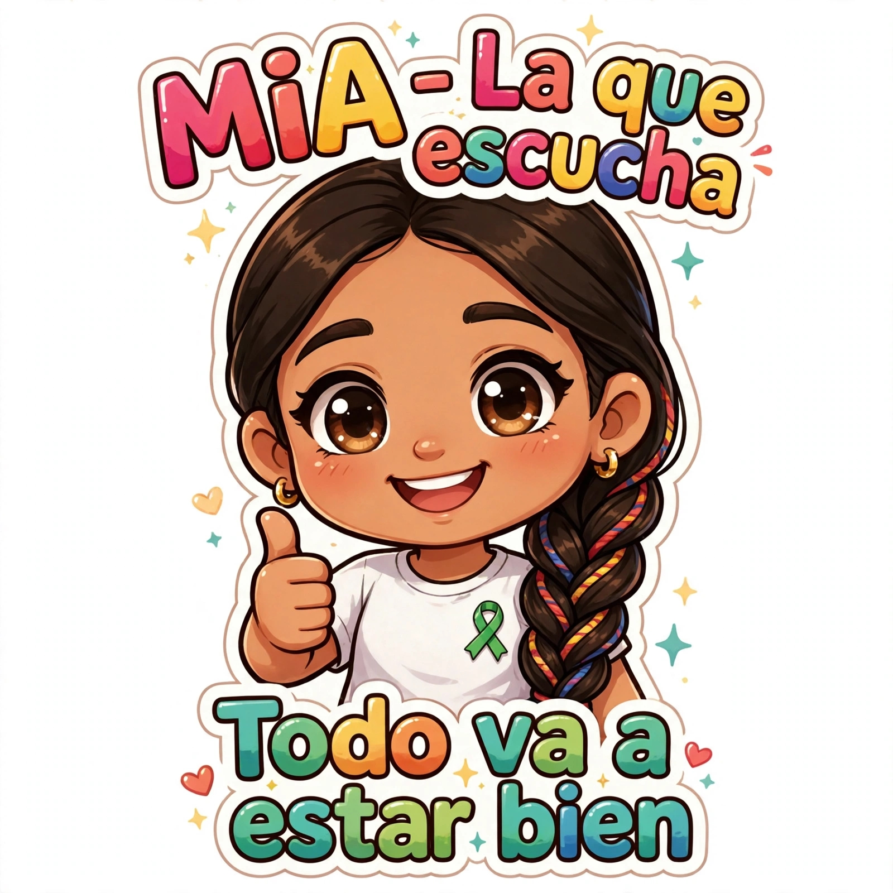
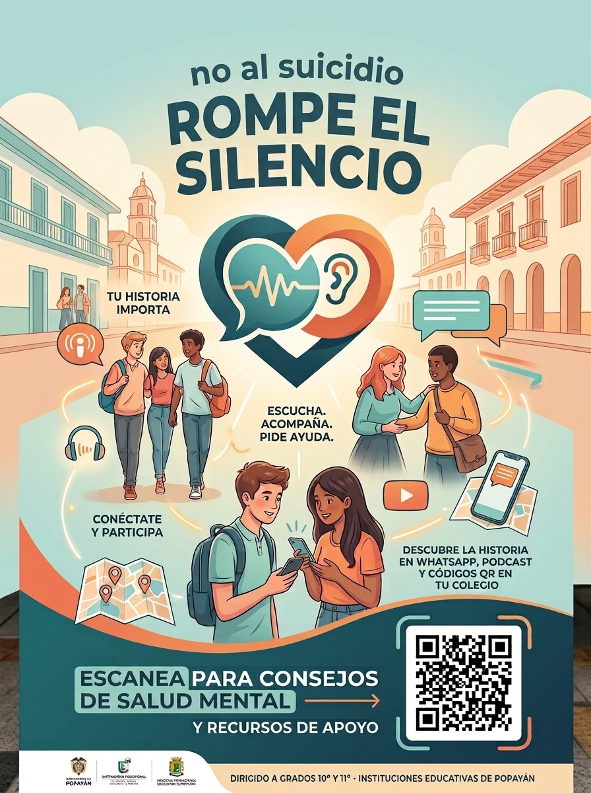

PROYECTO TRANSMEDIA
Un espacio para generar conciencia, hablar sobre salud mental y recordar la importancia de escuchar y acompañar.
CONOCER EL PROYECTO01 — EL PROYECTO
Este proyecto transmedia busca generar conciencia sobre la importancia de la salud mental y la prevención del suicidio, dirigido especialmente a estudiantes de grados superiores de instituciones educativas de Popayán. A través de diferentes medios y formatos buscamos informar, sensibilizar y promover espacios de escucha y acompañamiento. Nuestro propósito es abrir una conversación sobre situaciones que muchas veces resultan difíciles de expresar, derribar estigmas relacionados con la salud mental y recordar que pedir ayuda no es una señal de debilidad. Por medio de historias, contenidos audiovisuales y recursos interactivos, buscamos fomentar la empatía, fortalecer el apoyo entre estudiantes y promover una cultura en la que escuchar, acompañar y buscar ayuda sea cada vez más natural.
¿ QUE PASA CUANDO UNA PERSONA EMPIEZA A CAMBIAR ?
¿ SABES COMO ACERCARTE A UNA PERSONA CON ESTOS COMPORTAMIENTOS ?
¿ QUE PASA CUANDO ALGUIEN NECESITA SER ESCUCHADO, PERO DECIDE GUARDAR SILENCIO?
El bienestar emocional consiste en reconocer, comprender y gestionar nuestras emociones de manera saludable. Es fundamental para afrontar los desafíos cotidianos, fortalecer las relaciones personales y mantener una buena salud mental. En los estudiantes, aprender a expresar lo que sienten, manejar el estrés y buscar apoyo cuando lo necesitan contribuye a su desarrollo personal y académico. Recordemos que cuidar nuestras emociones también es cuidar de nosotros mismos.
Una situación de crisis ocurre cuando una persona atraviesa un momento de gran dificultad emocional y siente que no puede afrontar lo que está viviendo. Puede estar relacionada con problemas familiares, dificultades académicas, conflictos personales, pérdidas o sentimientos de soledad. En estos momentos, es importante escuchar sin juzgar, brindar apoyo y buscar ayuda de personas de confianza o profesionales. No tienes que enfrentar una situación difícil en soledad; pedir ayuda es un paso importante para encontrar soluciones y recuperar el bienestar emocional.
Escuchar y acompañar a alguien puede marcar una gran diferencia en su vida, especialmente cuando atraviesa momentos difíciles. Brindar atención, mostrar empatía y evitar juzgar permite que las personas expresen sus emociones y se sientan comprendidas. No siempre es necesario tener todas las respuestas; a veces, escuchar con respeto y hacer sentir a alguien que no está solo es el primer paso para ayudarlo. Recordemos que una palabra amable, un gesto de apoyo o la disposición para escuchar pueden fortalecer la confianza y motivar a buscar ayuda cuando sea necesario.
02 — HISTORIAS
Detrás de cada persona existe una historia. Esta sección presenta relatos que buscan generar empatía y reflexión alrededor de la salud mental.
03 — UNIVERSO TRANSMEDIA
Nuestro proyecto utiliza diferentes medios para contar, ampliar y explorar la historia.

Cuentale a Mia lo que te sucede, ella te escucha.
Mía es un personaje creado para recordarnos la importancia de escuchar con empatía, respeto y sin juzgar. Siempre está dispuesta a brindar un espacio seguro para expresar emociones, compartir preocupaciones y sentirse comprendido.

Descubre información clave sobre salud mental, bienestar emocional y prevención del suicidio. Escanea el código QR y accede a contenidos que te orientan, sensibilizan y recuerdan que no estás solo.
04 — AYUDA
Si tú o alguien que conoces está atravesando una situación difícil, hablar con una persona de confianza y buscar ayuda profesional puede ser un paso importante.
TU VOZ IMPORTA
Este es un espacio para expresarte libremente, compartir tus pensamientos y dejar mensajes de apoyo. No necesitas decir quién eres. Recuerda escribir con respeto y empatía.
Todavía no hay mensajes. ¡Puedes compartir el primero!